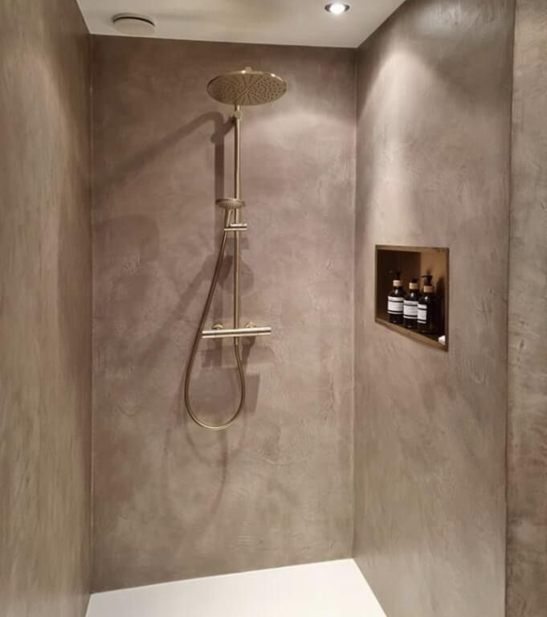
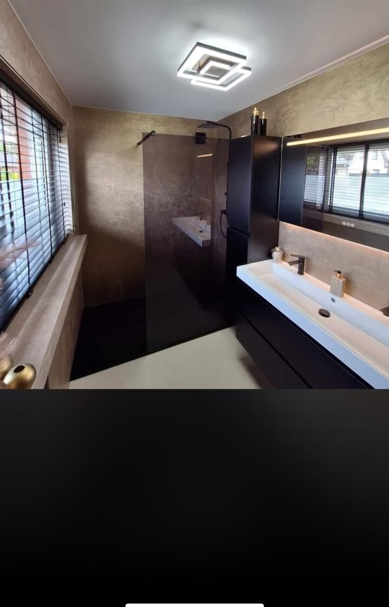

Een wand of vloer zie je elke dag. Daarom verdient hij echt vakwerk: rustig, strak en gemaakt om lang mooi te blijven.
DIENSTEN
Vijf manieren om een ruimte af te maken


UITGELICHT
Een gewelf, laag voor laag strak gezet
Geen rechte wand, maar een doorlopende boog. Machinaal opgezet en daarna met de hand gladgespaand, tot de ronding vloeiend doorloopt. [AANVULLEN: plaats en korte toelichting op dit project.]
Bekijk het project →WERKWIJZE
Laag voor laag naar een strakke wand
PROJECTEN
Recent werk




OVER FRANK
Persoonlijk contact, van opname tot oplevering
Frank Oldenburger komt zelf langs om je ruimte te bekijken en denkt met je mee over de mooiste afwerking.
Maak kennis met Frank →Klaar voor een wand of vloer die blijft verrassen?
Vraag een vrijblijvende opname aan. Frank komt langs en denkt met je mee.